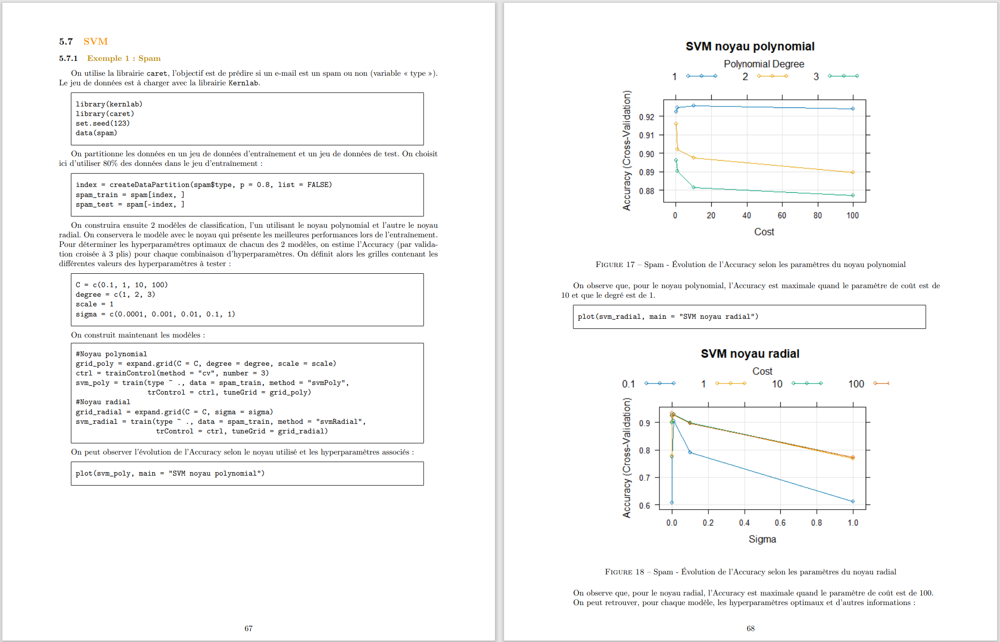

Présentation du projet
Cette publication présente une étude comparative de méthodes de classification supervisée, mises en œuvre avec les langages R et Python.
Plusieurs algorithmes sont étudiés : k plus proches voisins, régression logistique, forêts aléatoires, SVM, et réseaux de neurones. Ces méthodes sont testées sur cinq jeux de données emblématiques : Iris, Spam, MNIST, Titanic et Wine.
Le travail met l’accent sur l’approche appliquée, reproductible et pédagogique, avec des scripts documentés et une analyse rigoureuse des performances.
Technologies utilisées
- Langages : R, Python
- Librairies R : caret, ggplot2, randomForest, e1071
- Librairies Python : scikit-learn, pandas, seaborn, matplotlib
- Environnements : RStudio, Jupyter Notebook
Publication en ligne
Voici la publication en ligne (hébergée sur HAL Science) :
Captures d’écran
